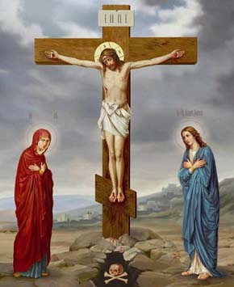

Религии
Буддизм
Религиозно-философское учение, возникшее
в V веке до нашей эры. Основано на учении
Будд и его пути в Нирвану, ставшего отшельником-
аскетом.
Будда на своем пути осваивал метод контроля
собственного сознания через медитации и
размышления. Так он пришел к выводу, на
котором основывается буддизм: люди слишком
сильно привязаны к мирским благам, из-за чего
человеческая душа деградирует, а не развивается.

Христиансво
Вера в Иисуса Христа

Ислам
Вера в единого Бога
Буддизм
Философское мировоззрение